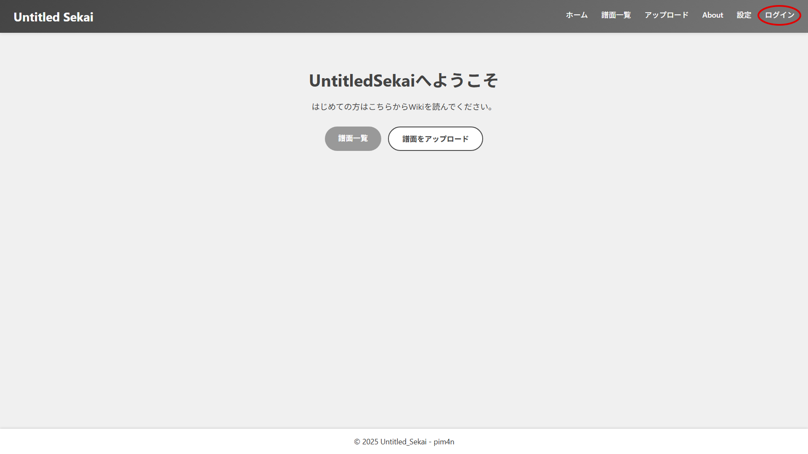
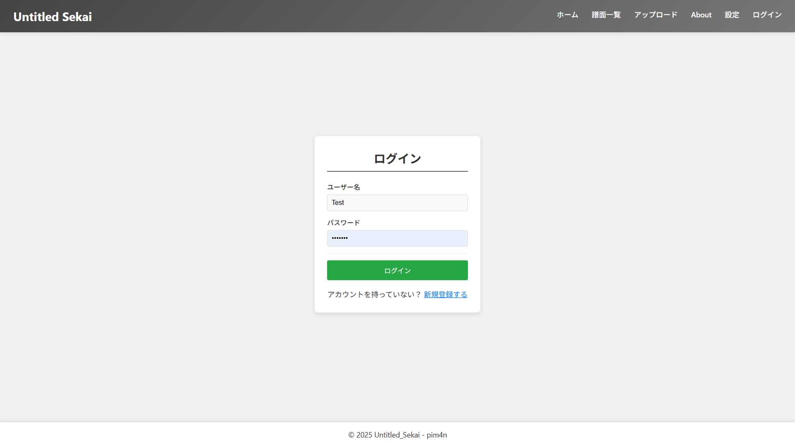
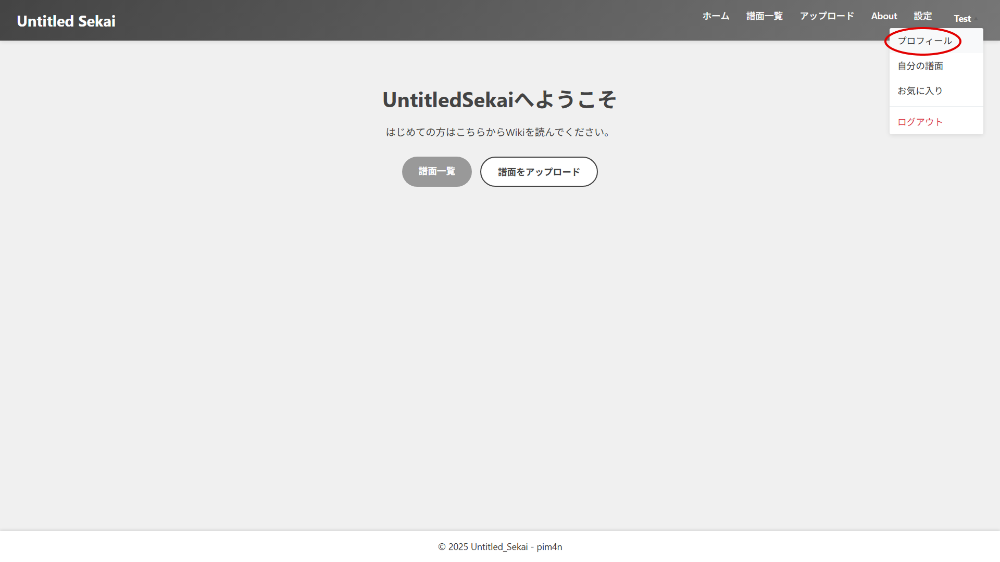
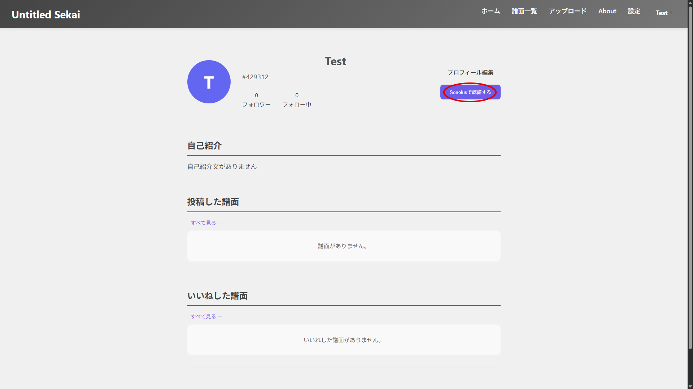
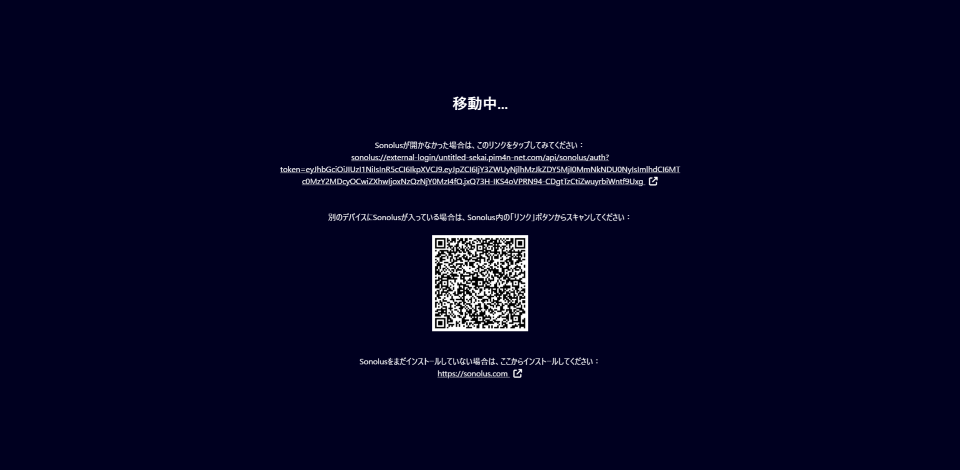
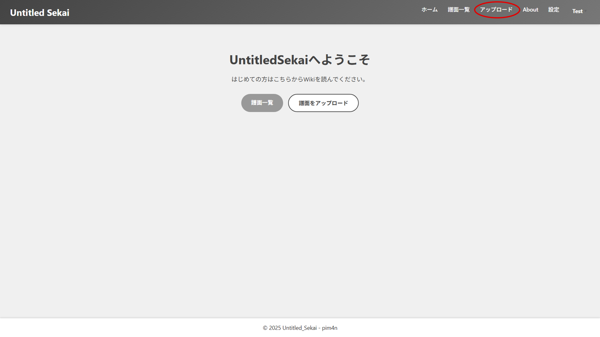
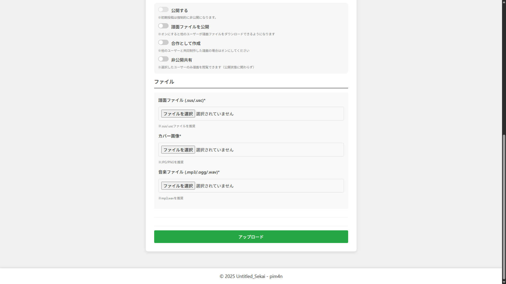
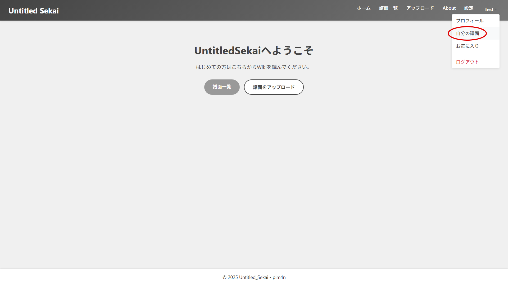

はじめに
はじめに
Untitled Sekaiは、某セカイ系音楽ゲームをモチーフにした創作譜面プラットフォームです。譜面をプレイするにはSonolusアプリが必要です。Sonolusのダウンロード方法はSonolus公式サイトをご参照ください。
譜面投稿について
譜面の投稿はこちらのサイトから行えます。
アカウントを持っていない場合
譜面を投稿するには、アカウントの作成とSonolusアプリでの認証が必要です。以下の手順に従ってください。
1. Untitled Sekaiのサイトを開き、画面右上の「ログイン」を選択します。

2. ユーザー名とパスワードを入力して「ログイン」をします。アカウントをお持ちでない場合は「新規登録」を押して登録後、再度「ログイン」してください。

3. 右上の自分の名前を選択した後に、「プロフィール」を選択します。

4.「Sonolusで認証する」を選択します。

5. 表示されたQRコードをスマートフォンやタブレットで読み取り、Sonolusアプリ内で認証を行ってください。
認証がされない場合
Sonolus側認証が完了しUntitled Sekaiのサイトに戻った際、認証がされない場合はページを再読み込みしてください。

1. 右上から「アップロード」を選択します。

2. 各項目に必要な情報を入力し、必要なファイルを選択した後、アップロードボタンを押すと投稿が完了できます。
投稿時の注意
投稿前に必ず譜面投稿規約をお読みください。 未完成の譜面の投稿は禁止です。テスト等で未完成の譜面を投稿する場合は、必ず「非公開設定」にチェックを入れてください。

3.右上のユーザー名から「自分の譜面」をクリックすると、自分がアップロードした譜面の確認や編集が可能です。
